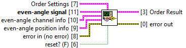
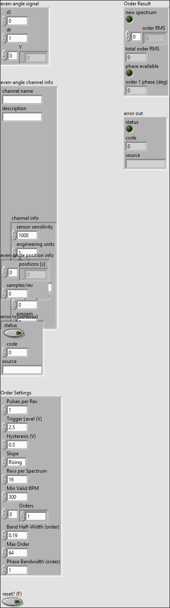
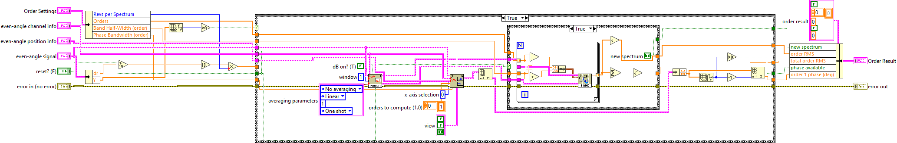
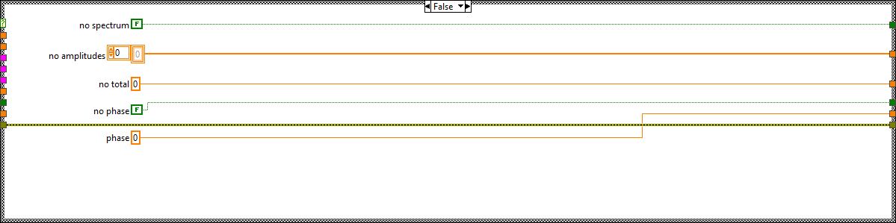
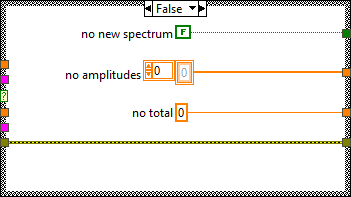

Order Analysis helper. From the even-angle accel of OAT Convert to Even Angle Signal: OAT Order Power Spectrum (Hanning, no averaging, block = Revs per Spectrum revolutions) and, on each new spectrum, SVFA Power in Band at every order +/- Band Half-Width -> order RMS (g rms) and total order RMS. OAT Order Magnitude and Phase gives the order-1 phase lag (deg, relative to the tach pulse). The S&V VIs keep their continuity state in this VI's preallocated clone; reset? restarts them.




